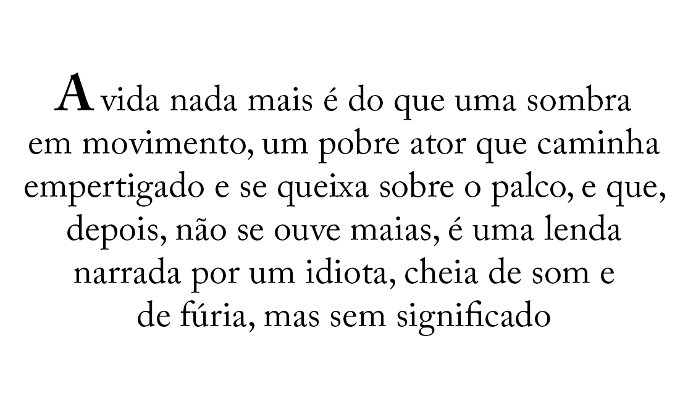
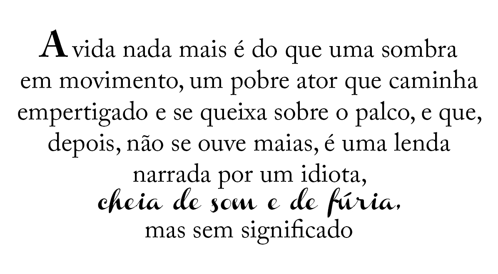

07 – Tipo (& Vida)
O tipo é o material básico de qualquer página impressa. Ele costuma ser irresistivelmente apelativo e, às vezes, absolutamente imperativo para a diagramação de uma página que contenha mais de uma fonte. Mas como saber quais fontes combinam entre si?
Na vida, quando há mais de um em qualquer coisa, estabelece-se uma relação dinâmica. Nas páginas, costuma haver mais de uma fonte nos seus diferentes elementos. Mesmo um documento com um simples texto corrido tem títulos, subtítulos ou, no mínimo, suas páginas numeradas. Nessa situação dinâmica da página (ou da vida), é estabelecida uma relação que pode ser concordante, conflitante ou contrastante.
Uma relação concordante ocorre quando usamos somente uma família de fontes, sem muitas variações de estilo, tamanho, peso etc. É fácil manter a harmonia da página e essa disposição tende a conferir ao material uma estética calma ou formal (e, às vezes, chata).
Uma relação conflitante ocorre quando combinamos fontes similares em estilo, tamanho, peso etc. As similaridades são incômodas porque as atrações visuais não são as mesmas (concordantes), mas também não são diferentes (contrastantes); portanto, criam um conflito.
Uma relação contrastante ocorre quando combinamos fontes separadas e elementos nitidamente diferentes entre si. Os designs visualmente interessantes que costumam atrair sua atenção têm, em geral, bastante contraste e os contrastes são enfatizados.
A maioria dos designers tende a se perder ao combinar mais de uma fonte em uma única página. É preciso sentir se uma fonte deve ficar maior ou se um elemento deve ficar mais evidenciado. Mas quando você consegue reconhecer e dar nome aos contrastes, você tem controle sobre eles. Assim, poderá chegar à base do problema e descobrir soluções mais interessantes. Este é o principal tema desta seção.
Concordância
Um design estará em concordância quando você optar pela utilização de apenas uma fonte e os outros elementos que compõem a página possuírem as mesmas qualidades daquela fonte; um tamanho maior nos títulos; uma imagem ou vários ornamentos, mas a impressão básica ainda será concordante.
A maioria dos designs concordantes tende a ser mais calma e formal. Isso não significa que a concordância seja indesejável. Basta estar consciente da impressão que você criará aplicando elementos que estejam todos em concordância entre si.
Este exemplo concordante foi diagramado na fonte Cochin. A primeira letra é maior e algumas palavras estão em itálico (a cochin Italic), mas a peça inteira tem uma aparência suave.
A fonte pesada combina com o contorno mais forte. Mesmo a linha para que a pessoa escreva é grossa.
A fonte, a borda fina e os ornamentos delicados oferecem a mesma impressão quanto ao estilo.
Parece conhecido? Muitas pessoas preferem ser tradicionais em seus convites de casamento, usando o princípio da concordância.
Conflito
Um design tem conflito quando se adotam duas ou mais fontes similares na mesma página, mas que não são efetivamente diferentes ou iguais. Quando se colocam duas fontes parecidas (mas não iguais) juntas, a maior parte das pessoas que olha para o material acha que foi um erro. O problema está nas similaridades.
A concordância é um conceito sólido e útil; o conflito deve ser evitado.

O que acontece neste exemplo quando você lê a frase “cheia de sons e de fúrias”? Você sabe por que ela está em outra fonte? Você fica em dúvida se é ou não um erro? Isso faz que você pisque? A letra inicial, em tamanho maior, aparenta estar exatamente em seu lugar?
Observe especificamente a letra “a” no título e nas outras linhas. Ela é similar, mas não é igual. O contorno não tem o mesmo peso visual que o tipo e as linhas, e eles não estão contrastando muito. Há muito conflito neste pequeno material.
O pequeno convite tem duas fontes manuscritas diferentes, mas com várias similaridades entre si; porém não são iguais e também não são diferentes.
Os ornamentos têm o mesmo tipo de conflito. O mesmo parece um pouco desorganizado.
Contraste
Não há qualidade neste mundo que não deva a sua existência a um simples contraste. Nada existe por si mesmo. – Herman Melville
Agora vem a parte divertida. Criar concordância é algo muito fácil; criar conflito é fácil, porém indesejável. Criar contrastes é muito divertido.
O Contraste marcante atrai os olhos, como você pôde aprender na seção anterior sobre design. Uma das maneiras mais eficazes, simples e satisfatórias de se conferir contraste a um design é através de tipologia.

Neste exemplo é óbvio que a frase “cheia de sons e fúrias” deveria estar em outra fonte. O material ficou visualmente mais interessante e com mais força, por causa do contraste dos tipos.
Agora o contraste entre as fontes está nítido (elas são da mesma família de fontes): a fonte em negrito contrasta com a fonte muito leve (light). As espessuras das linhas do contorno e de preenchimento também estão nitidamente diferenciadas.
Este convite foi feito com duas fontes completamente diferentes; elas divergem de várias maneiras.
A figura capta a força da fonte escura, acrescentando outro ponto de contraste à fonte manuscrita e criando um toque repetitivo.